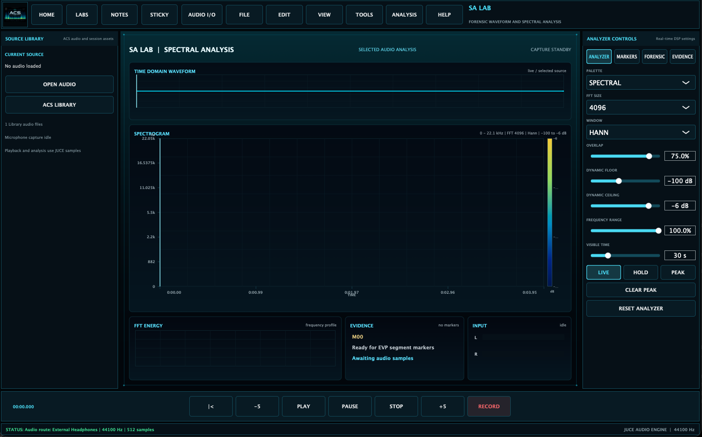

Contamination Is Normal
Contamination is not failure. It is part of audio and ITC work. The mistake is pretending contamination is not possible. Every session should assume ordinary sources may be present until they are checked.
EVP / ITC Lessons · 04
Radio bleed, human speech, movement noise, recorder handling, room acoustics, expectation bias, and review discipline.

Contamination is not failure. It is part of audio and ITC work. The mistake is pretending contamination is not possible. Every session should assume ordinary sources may be present until they are checked.
Use baseline room tone, no-question control periods, device-distance notes, spoken event markers, multiple recorders when possible, and review copies that preserve the raw original. For radio or sweep work, document frequencies, sweep rate, nearby stations, and any audible broadcast fragments.
People hear what they are prepared to hear. That does not make every candidate meaningless, but it does mean review should be patient. Ask reviewers for independent impressions before sharing your own interpretation.